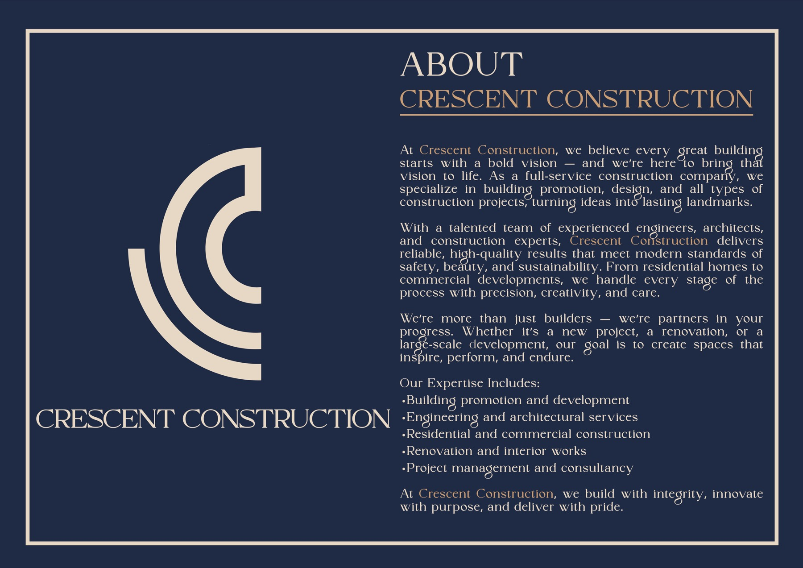

M
Mission
Deliver quality construction with safety, precision and disciplined execution across residential and institutional work.
Corporate construction identity shaped by engineering focus, project discipline and practical execution.

CRESCENT CONSTRUCTION presents itself as a full-service construction company with experience in building promotion, design support and all types of construction works. The company profile emphasizes reliable execution, quality results and a practical approach to turning ideas into lasting landmarks.
From residential homes and apartment buildings to institutional repair and restoration assignments, CRESCENT CONSTRUCTION positions itself as a partner in progress rather than only a contractor.
Deliver quality construction with safety, precision and disciplined execution across residential and institutional work.
Become a trusted infrastructure and construction partner in Siliguri, Darjeeling and the wider North Bengal region.
Six-storied residential project in Pradhannagar, Siliguri.
G+4 apartment project in Pradhannagar, now recognized by the Disha Dental Clinic frontage.
G+3 residential project at Gurung Basti, Siliguri, with the company's office operating from the ground floor.
Ongoing residential development and active government restoration execution in Kurseong.
This website keeps space for credentials without inventing approvals that have not been uploaded yet.
The website intentionally leans into white space, charcoal structure, red highlights and strong project documentation so CRESCENT CONSTRUCTION feels like a serious infrastructure partner.
Talk through scope, location and delivery expectations with CRESCENT CONSTRUCTION.